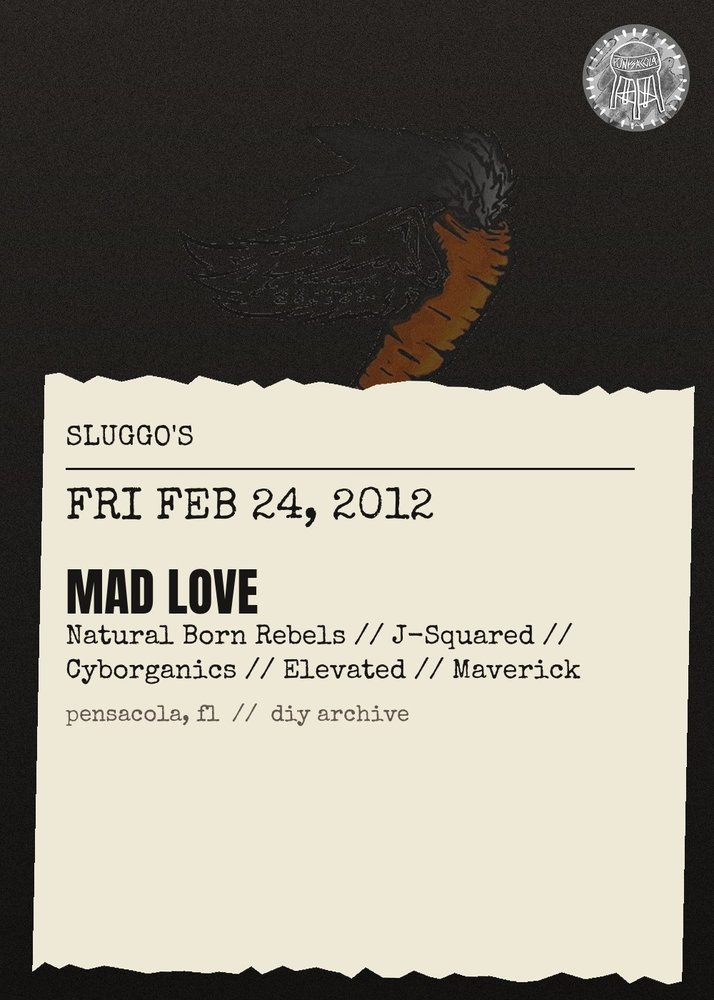

FRI FEB 24from the archive
Mad Love, Natural Born Rebels, Jsquared, Cyborganics, Elevated, Maverick
all ages
ALL AGES! \n\nIts that time again!!!!! Music Monthly brings in the 2nd edition of the newest and freshest monthly event. This episode brings you bands like Mad Love and Natural Born Rebels. While keepin it real with Hip Hop\/Rap acts like J-Squared, Cyborganics, & Elevated and Maverick!!!! There's always speed on the wheels of steel when St. Pete The Beatman holds it down on the decks. So lets do it big at Sluggo's and support our local artists with a solid crowd!! Yeah!!\n